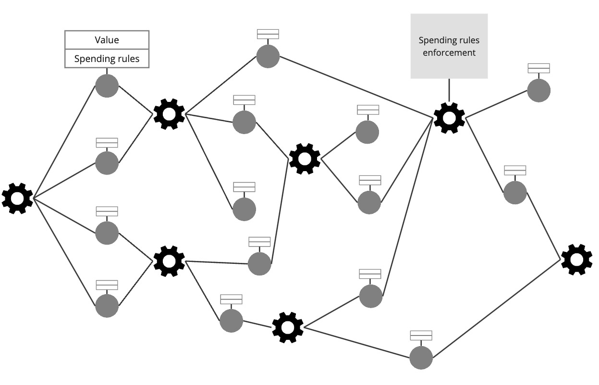
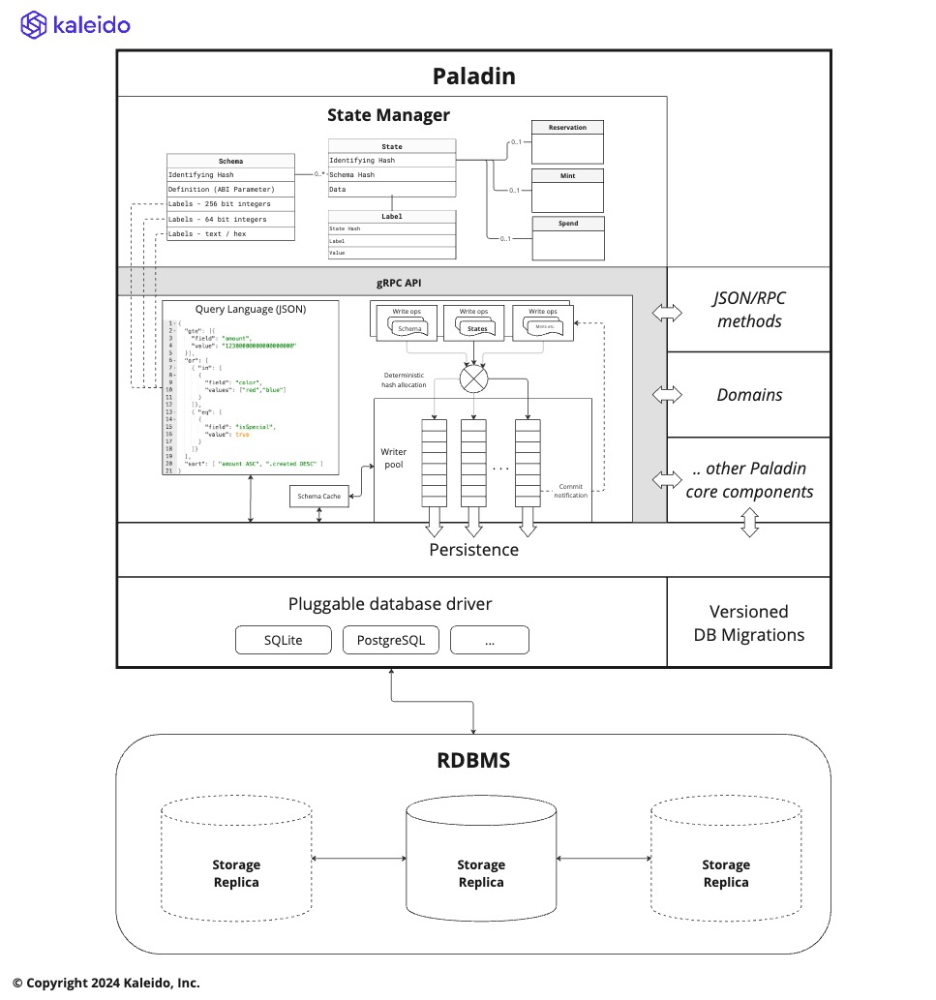

UXTO State Store¶
As discussed in Programming Model each of the privacy preserving smart contract domains of a Paladin runtime has a layer of code that must efficiently access private states.
The nature of private states being selectively disclosed, means the model most commonly used to manage the relationships between these states is a the Unspent Transaction Output (UTXO) model.
This includes domains like Pente that implement EVM programmability on top of these states, with each UTXO representing the current state of a private EVM smart contract

Guiding architectural principals¶
The Paladin architecture is optimized to store and query these selectively disclosed UTXO states efficiently.
Some guiding principles that underpin this architecture are as follows:
- Domains must be able to query the state store efficiently, and flexibly
- Data must be hashable in a way it can be attested to on the base blockchain and in zero knowledge proofs
- Each domain must be able to store completely different data in its private states
- Web3 solutions primarily use fixed-point arithmetic with large 256bit numbers, rather than floating point
- States must be self-contained so they can be transmitted between Paladin runtimes efficiently
- Private state storage must be very reliable, as (unlike the base blockchain) only one party might hold the state
- States are immutable - per UTXO semantics
- States might need to be persisted a long time before, or after, the blockchain transactions that confirm or spend them
Architecture¶

Due to the fact that we cannot rely on the consensus algorithm and validators of the base ledger to retain backup copies of private data, Paladin is optimized for enterprise RDBMS systems that provide replicated data storage.
Any SQL based RDBMS database is supported, and DDL migrations are provided for various databases. The architecture is flexible such that other fundamental types of storage can be added in the future (NoSQL / document based for example).
These types of database provide indexing, sorting and querying facilities alongside resilience. This is important to allow sophisticated state / coin selection algorithms to be run in the domains.
Dynamic indexes: Schemas and Labels¶
The storage is structured in the SQL layer, so that fast indexed labels can be dynamically applied to states
without any change to the table layout in the RDBMS.
However, for efficiency in the query system it is important that the list of possible labels, and their data types can be known ahead of time for each state that is stored.
To do this a schema must be stored by a domain, before any states are stored.
- Schemas are isolated to a domain
- Schemas are identified by a hash (just like states)
- A matching schema must exist to receive a state into the Paladin engine
ABI Type System¶
Rather than inventing a new type system for Paladin, we incorporate the well established type system of the Ethereum ecosystem used in the Ethereum Application Binary Interface (ABI).
Specifically we support the subset that the ERC-712
TypedData standard accommodates, as this standard fits the model of structured data very closely to
what is required for our UTXO states.
When creating a schema using an ABI definition (JSON) we:
- Require a single type definition of type
tuple(not an array, or a function definition) - Require the
"internalType": "struct StructNameextension of ABI is used to define alltuplenames - Use the
indexedboolean parameter on the top level type to specify thelabels
The schema system is pluggable such that other schema types can be plugged in, for example if a domain wished to use JSON Schema with special annotations to describe the data schema and a different hashing.
Supported types¶
The following types can be used in structures, and also as indexed fields that
are available for searching and sorting.
This includes supporting 256bit integers, as most coins are implemented using large whole numbers with a designated number of decimals (such as 18).
The query syntax supports supplying the values in many different ways (decimal, hex,
with/without 0x prefix etc.). These are transformed to a standard format for efficient
indexed filtering/sorting in the backing SQL database as follows.
| Type | Indexed in the database as |
|---|---|
string |
Text |
bytes1 to bytes32 |
Bytes (encoded as hex) |
bytes |
Bytes (encoded as hex) |
uint8 to uint63 |
8 byte signed numbers (note uint64 too large in SQL) |
int8 to int64 |
8 byte signed numbers |
uint64 to uint256 |
64 character fixed width big-endian hex |
address |
Identically to uint160 |
int65 to int256 |
65 character two's compliment hex strings with sign prefix |
bool |
The same as int64(0)/int64(1) for false/true |
Performance tip: Use
int64for all numbers that do not require 256bit precision, such as timestamps and whole values. Avoid usinguint64- it is the same cost asuint256
JSON input/output¶
While we use the ABI type system, and schema definition language, the data itself can come in and out of the Paladin node in JSON format as the primary exchange format for that data.
The data itself is stored directly into the database as a blob, so that when it is returned to the domain all values embedded are available - not just those that have been indexed for query.
The system uses JSON in the database (mainly to make debugging easy vs. a binary format like ABI+RLP), but it re-serializes it according to the ABI schema. This means that:
- No fields that are not included in the
TypedDataare included - Consistent formatting of values like numbers (strings in decimal) and bytes (hex with
0xprefix)
Domains can be coded to expect their JSON data to be standardized in this way, and do not need to worry about the various ways end-users might supply logically equivalent data.
Hashing¶
In addition to following the ABI / EIP-712 type system, we also use the EIP-712 hashStruct(message) algorithm
(specifically Version 4 of that algorithm) to deterministically generate a hash for the data.
Query language¶
The query language is flexible, with access to the full power of the SQL query system.